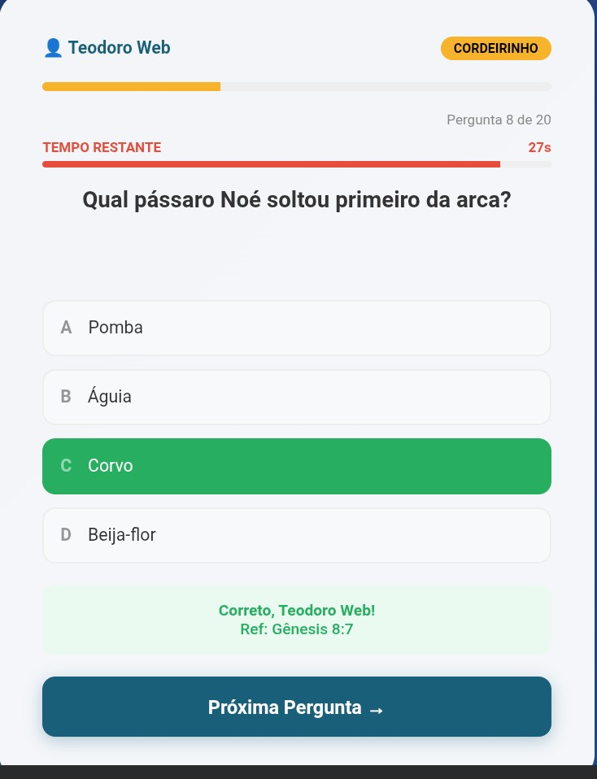

Olá, eu sou o Teodoro Web
Desenvolvedor focado em criar soluções tecnológicas para a gestão eficiente e resolução dos problemas diários.
Desenvolvedor focado em criar soluções tecnológicas para a gestão eficiente e resolução dos problemas diários.
Sou um desenvolvedor apaixonado por criar experiências digitais incríveis. Tenho experiência em HTML, CSS, JavaScript e frameworks modernos. Gosto de aprender e compartilhar conhecimento.
Localização: Angola/Luanda-Kilamba

Um jogo de quiz interativo com cronómetro, níveis de dificuldade e referências bíblicas. Tudo que você precisa para fazer crescer o seu conhecimento biblico.
Jogar AgoraUm livre que convida ao leitor a explorar a luta existente em todos nós. Entre o que se quer e o que se deve.
Ler AgoraAplicação sincronizada com Firebase para gestão de membros, presença e pedidos de oração em tempo real.
Abrir App
Plataforma para assistir todas as temporadas do anime Demon Slayer.
Em desenvolvimento...Sempre a aprender novas tecnologias para servir melhor o mercado de trabalho.
Em desenvolvimento...